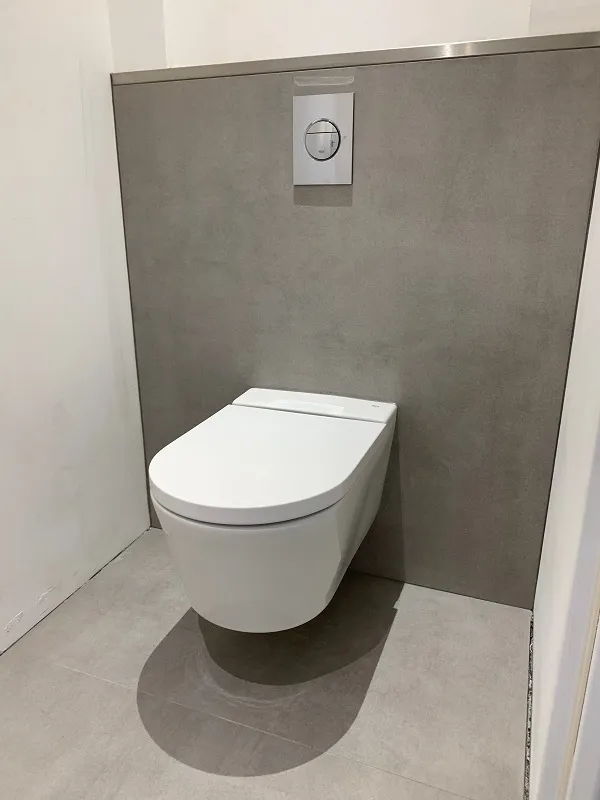

Grand format
60x120, 90x90 et plus. Double encollage selon le DTU 52.1, croisillons autonivelants pour zéro désaffleur. Effet contemporain et minimaliste, peu de joints.
Grand format, travertin, mosaïque, imitation bois, sol et mur. La pose soignée d'un carreleur qui pense d'abord à la planéité du support.

Un sol carrelé, c'est un élément central de votre espace. Il mérite une pose méticuleuse et un support irréprochable. Depuis 2015, nous posons du carrelage haut de gamme pour des clients exigeants en Haute-Provence.
Notre force, c'est de maîtriser aussi la chape qui reçoit le carrelage. Un support plan, c'est la condition d'une pose sans désaffleur, surtout en grand format. Du calepinage au choix des joints, on vous accompagne sur chaque décision.
Du classique au contemporain, nous travaillons une large gamme de matériaux et de formats. Chacun a ses contraintes de pose, on les connaît.
60x120, 90x90 et plus. Double encollage selon le DTU 52.1, croisillons autonivelants pour zéro désaffleur. Effet contemporain et minimaliste, peu de joints.
Travertin, marbre, ardoise. Colle adaptée, sens des veines respecté, hydrofuge pour protéger la pierre. L'authenticité de la matière, posée pour durer.
Frises, niches, fonds de douche, crédences. Idéale pour personnaliser un espace avec un motif unique et habiller les volumes complexes.
Le charme du parquet sans les contraintes d'entretien. Parfait dans une pièce humide ou sur un plancher chauffant, où le bois véritable est déconseillé.

Plus le carreau est grand, plus le moindre défaut de support se voit. C'est là que la double compétence chape et carrelage prend tout son sens.
On pose en double encollage, colle au sol et au dos du carreau, comme l'exige le DTU 52.1. Les croisillons autonivelants garantissent un plan parfait entre chaque carreau. Et quand il faut une coupe d'onglet ou intégrer un profilé inox sur un escalier, on prend le temps de la précision.

Souvent négligé, le joint transforme pourtant l'aspect de votre carrelage. Sa couleur et sa largeur sont des décisions à part entière, qu'on prend avec vous.
Un joint ton sur ton efface les lignes et agrandit la pièce. Un joint contrasté souligne le calepinage et donne du caractère. Pour les pièces humides, le joint époxy est notre recommandation : résistant aux moisissures et facile à nettoyer. On vous présente les nuanciers lors de la visite à domicile avec le camion d'échantillons.
Grand format, travertin, faïence grand format. Un aperçu de chantiers en Haute-Provence. Cliquez pour agrandir.


Double encollage, planéité, formats XXL : les clés d'une pose réussie.
Support, joints de fractionnement, colle : les causes et les bons réflexes.

Plots réglables, dalles 60x60, pose à sec : comment ça marche.
Devis gratuit sous 48h, sans engagement. On se déplace dans un rayon de 2h autour de Manosque, avec le camion d'échantillons.